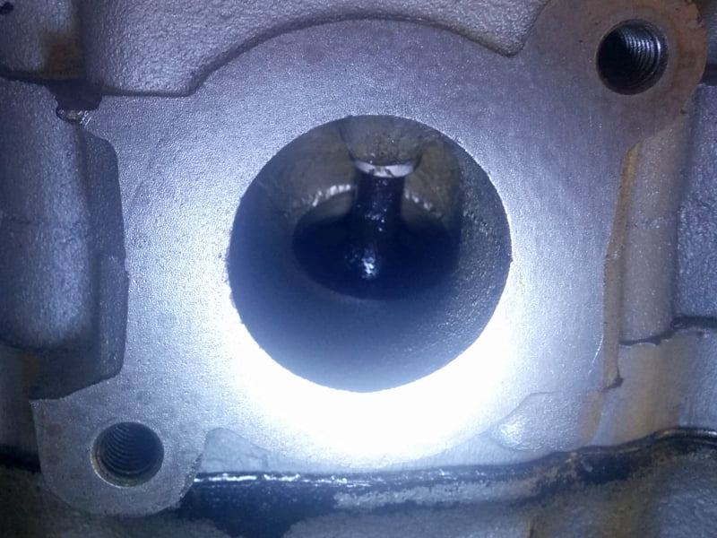
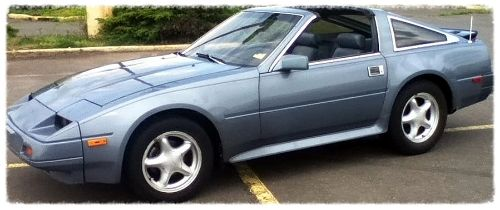

-
Going over the last year in this as close to proper sequence as i can recall.
Typing it all out helps me get my head around it too.
History:
Had a shop rebuild the top end with new valve job, guides and seals, bottom end got new crank/con bearings last year.
Rebuilt top end, fried ECU, replaced/repaired ECU.
So after the motor was started up it smoked burnt oil pretty badly.
I pulled the motor, after doing a leakdown test indicated possible failing rings.
A compression test at the same time looked very good.
On the tear down, I found fresh burnt oil in the exhaust manifolds of a couple cylinders, that kinda
made me think it was actually the rings, so i plowed on ahead and disassembled
the bottom end again and installed new rings and honed the cylinder walls. Then let it sit…for months
while i cleaned and rebuilt other things on the car and fought water leaks in my other Z.
Now i'm putting it back together and notice yellowish oil staining in the intake side of a few ports
as well as the burnt oil on the corresponding exhaust port and fouling on the exhaust valves.
Could it be the wrong valve seals were installed? Could the rebuilt turbo have been leaking oil?
I built a vacuum plate and pulled and held a consistent 25 Hg of vac on the intake and exhaust ports,
so that would indicate the valve job was good, and possibly the seals. But if the valves were sealing good
the seal above it could still be bad…possibly?
I reassembled the bottom end (months ago) and top end (over the last few nights).
New Victor Reinz head gaskets, intake gaskets.
Must be the turbo. It came as a spare with my AE and had been rebuilt.
I took that apart last night and it's spotless on the compressor side, no oil. plus none in the charge pipe or TB
where it would normally be found. Shit, i just installed the heads on the block.
Back to the valve stem seals. Maybe they installed the exh seal on the intake.
Pulled #1 intake valve spring last night and the seal looked good and was the correct one.
I haven't pulled the exhaust seal yet, but will tonight.
I get that if the exhaust valve stem seals were bad, there would be oil in the exhaust, and i found dark staining on the exhaust ports
but then i also found a bit of light oil staining on the intake side. Not sure if bad rings would allow oil in the intake, since it is sealed
from the compression.
I purchased some federal-mogul valve stem seals and i'm going to go ahead and replace them before i reinstall the motor.
Its a pain with the heads on, but worth the insurance.
Is there anything i could be overlooking? Worrying too much possibly?
84 AE/Shiro #683/Shiro #820/84 Turbo -
So only 2 things that come to mind....
1 - If the ring gaps are too tight, you will get blow by and oil burning issues. I have experienced this. I had to pull it all apart and gap the rings a bit more. I gapped mine to .022 on the VG33 stock bore.
2 - I have done leak down tests and compression tests in the past and didn't have conclusive results. My machinist told me to pour either rubbing alcohol or paint thinner into the intake and exhaust ports. Let set for hours or overnight.
Any valves that are wet later are leaking from the seats. Simple valve lapping should resolve this.
But yeah, valve stem seals are easy to replace. If there are any doubts, just do it.
But remember, if the valves are leaking past the seats, chamber pressure could be flowing into the heads (possibly from the valve stem seals)
just my .02 -
if the valves seat properly, and show no oil on the backs of the valves, or weeping residue, I would not suspect seals.
valves seating properly, and valve seals really have nothing to do with each other.
I think youre right to chase the rings, I had one engine I went through and did bearings, and new head gasket (as I had no indication to do rings…) but it chugged out burn oil. when I went to tear down, found the #2 cyl exhaust port was oil coated. rings are my estimation. I think I chucked that engine awhile ago…Damn dirty angels....these cars!
Current Daily Driver - 86 Turbo.
Under the cover - THE BANANA… that needs to be re-energized.
sigpic -
Got off my ass and pulled some springs on the passenger side head.
I think the shop that did the heads did infact use the wrong seals on the exhaust valves. They slipped
off way to easy and i even found the one for cyl #3 wasn't even seated.
I also found some huge sizing discrepancies when i ordered seals from rockauto. The PN's were correct.
I ended up using the metal shielded intake seals from one of those Ebay top-end kits that i had on the shelf on the 7mm intake valves,
and the ST 2069 "intake" seals from sealed power on the (forgot dia, but larger than 7mm) exhaust valves.
Exh valve stem seal as found on cyl#3
There was a fair amount of burned oil on the back side of the valve of cyl #3, and also cyl#6

Originally posted by amreboot View Post
Originally posted by Axel kain View Post
84 AE/Shiro #683/Shiro #820/84 Turbo -
I'd probably think about getting new heads entirely from a stable Z. Machine shops are scary places when you bring in heads. Any heavy machines couldve easily ruin the integrity of them.
When I sent my heads to the shop, I got them surfaced only. The rest I did myself and a bit more.
I slapped on stock size ferrea valves, Schneider springs, iskys,etc. When I got everything tohether , I sat at my dinner table(yes I was screamed at) and I passionately" put it all together. The only problem I had was cheap spring compressors but even that didn't get in the way. I got my seals from rock auto, both intake and exhaust and they went on snuggly.cool story.
I was doing an engine rebuild, top and bottom. The pistons rings and bearings were also from rock auto. Good batch of parts.
Nevertheless, machines shops are scary places. Lol hopefully you getuit running again smoothly.Compressed Springs is the scariest shit EVER!
" border="0" alt="">

Copyright © 2006–. All rights reserved. Privacy Policy